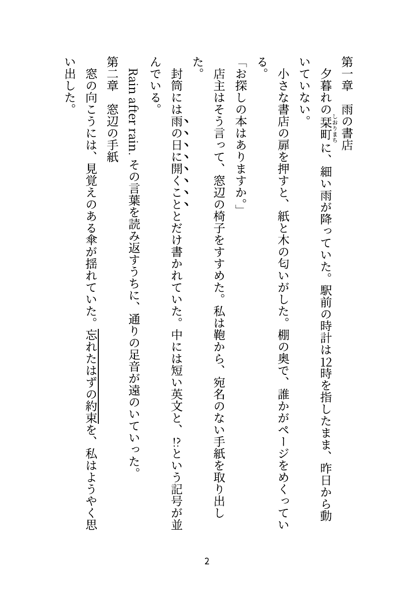

原稿からTXT・DOCX・PDF・EPUB・HTMLを作ります。Studioで設定した作品名・著者名を共有し、未保存の本文も開始時点の内容で出力できます。出力中も原稿の編集を続けられます。
初回の準備
出力にはDockerとComposeが必要です。通常の縦書き編集やStudioだけならDockerは不要です。macOSではDocker Desktopを起動し、ターミナルから docker info を実行できることを確認します。リポジトリのフォルダーで次を実行してください。
cd /path/to/my-tategaki
./bin/tategaki-export build
./bin/tategaki-export doctorbuild は初回と出力コード更新後に実行します。ツールとフォントの取得にネット接続が必要です。doctor でDockerとコンテナ内のツール情報を確認できます。通常の利用ではホストへのPython・Node・Java・Pandocの追加導入は不要です。原稿の変換コンテナはネット接続なしで動作します。
Studio・Emacsから出力する
- 原稿を開き、設定でタイトル・著者・言語・識別子を入力します。継続して使う情報は保存先「この作品」で保存します。
- 原稿 → 出力、または
M-x tategaki-exportを実行します。 - 必要な形式を選びます。複数指定する場合は
epub,htmlのようにカンマで区切ります。 - まずは
previewを選びます。章を電子目次へ入れたい場合は、下の見出し設定も行ってください。 M-x tategaki-export-statusでジョブを選び、結果と出力フォルダーを開きます。
M-x tategaki-export-all は5形式すべてを出力します。保存先の既定値はリポジトリの dist/ です。別のフォルダーにする場合は、出力前に次のように設定します。
(require 'tategaki-export)
(setq tategaki-export-output-directory "~/Documents/tategaki-output"
tategaki-export-profile "preview")
;; Markdownの章見出しを出力でも解釈する
(setq-local tategaki-export-input-options '((headings . "markdown")))出力設定と編集画面の用紙設定は別です。画面を20字×20列にしただけでは、PDFやDOCXも同じ改ページにはなりません。
未保存本文と出力範囲
出力はコマンド開始時のバッファ本文をコピーし、すべての形式で同じスナップショットを使います。未保存の確定済み本文を含み、開始後の追記は含みません。元ファイルの保存、本文の書換え、Undoの追加は行いません。IMEの未確定表示や未採用の補完候補も出力本文には入りません。
既定ではnarrowing中でも全文を出力します。範囲を限定する場合は、先に必要な選択・narrowingを行い、C-u を付けて M-x tategaki-export または tategaki-export-all を実行します。
| 範囲 | 対象 |
|---|---|
full | 元バッファの全文。 |
region | 現在の選択範囲。 |
narrowed | narrowingで限定した編集可能な範囲。 |
入力ファイルがUTF-8以外でも、Emacsで正しく開けていればバッファから出力できます。ターミナルのCLIに渡す原稿ファイルはUTF-8にしてください。
進捗・ログ・取消
tategaki-export-status はジョブの状態、レポート、ログを表示、出力フォルダーを表示します。処理中の最新情報はログで確認できます。状態画面やログの上部の閉じるは画面を閉じるだけで、出力を停止しません。
停止する場合は M-x tategaki-export-cancel で実行中のジョブを選びます。このEmacsで開始したジョブだけが対象です。コンテナの起動中も取消を再試行します。終了と取消が重なる場合があるため、最後にレポートの状態を確認してください。
完成物を確認する
出力は 出力先/ジョブID/ に置かれます。まず report.md を開き、形式別の結果と警告を確認してください。report.json は同じ結果をプログラムで読むための記録です。


previewプロファイルでPDF出力した本文ページ。用紙と改ページは画面表示とは別です。| ファイル | 使い道 |
|---|---|
txt/source.txt | 注記・改行を保持した原文スナップショット。 |
txt/body.txt | 対応注記を除いた本文。ルビは親文字を残す。 |
docx/manuscript.docx | 編集できる縦書き段落。見出し、ルビ、縦中横、傍点・傍線、ページ番号に対応。 |
pdf/manuscript.pdf | Vivliostyleで組版した固定ページ。校正・共有用。確認用のページ画像も生成。 |
epub/manuscript.epub | 縦書き・右から左へのページ進行・電子目次を持つリフロー型EPUB 3。 |
html/manuscript.html | ブラウザで読める縦書きHTML。 |
| レポートの状態 | 意味 |
|---|---|
pending / running | 待機中／処理中。 |
succeeded | 生成と実装済み検査に成功。閲覧アプリごとの確認は別途必要。 |
failed / blocked | 生成・検査に失敗／前提不足で実行できなかった。 |
cancelled / not_requested | 取消／今回の対象外。 |
一形式が失敗しても、独立して処理できるほかの形式は続行します。失敗した途中ファイルは .work/ と logs/ に残り、完成品として公開しません。再実行は新しいジョブになり、前回の成果物を上書きしません。
用紙と章見出しを選ぶ
| プロファイル | 既定の用途・設定 |
|---|---|
preview | A5、余白20mm、12pt。見出し記号は本文として残す。未対応・未完成注記は原文を残して警告。 |
submission | A4、余白25mm、12pt。和文の章見出しを認識。DOCX・PDFに文字表紙を付け、未解決の注記診断がある場合は失敗。 |
submission は汎用の提出・校正用設定です。特定の賞・出版社の最新応募規定を自動適用するものではありません。
電子目次の章認識は input.headings で指定します。literal は見出しを解釈せず、markdown、org、japanese はそれぞれの見出しを認識します。編集画面の目次認識とは独立しています。MarkdownやOrgを選んでも、本文中のリンク・数式・強調などはその言語として変換しません。
独自の用紙・余白・フォントを使う場合は export/profiles/preview.json をコピーして編集します。docx と pdf は形式ごとに設定します。page_width_mm / page_height_mm / margin_mm はmm、font_size_pt はpt、line_height は行送りの倍率です。JSON全体の例はコピー元とDocker出力ガイドを参照してください。
cp export/profiles/preview.json my-profile.json
./bin/tategaki-export export manuscript.txt \
--profile ./my-profile.json --out ./distEmacsでは tategaki-export-profile に独自JSONの絶対パスを設定します。対応注記は青空文庫形式のルビ・傍点・傍線・縦中横です。未対応注記を黙って削除することはありません。
作品名・著者・言語・識別子を共有する
Studioの設定で保存した title、author、language、identifier を、Emacsからの出力にも使います。通常は出力のたびに入力する必要はありません。
Emacsの通常出力での優先順位は、Studioのセッション・作品・既定metadata → バッファの tategaki-export-metadata → 出力プロファイルです。タイトルが空ならファイル／バッファ名、言語が空なら ja を使います。バッファだけのmetadataより作品設定が優先する点に注意してください。
CLIはStudioの作品JSONを自動で探しません。プロファイルの metadata、または --metadata で渡すJSONへ指定します。
{
"title": "雨上がりの町",
"author": "筆名",
"language": "ja",
"identifier": "urn:novel:ameagari"
}識別子は作品固有の値に置き換えるか、省略します。CLIで省略した場合は原文SHA-256由来のURNになります。プロファイルでは任意の subtitle、colophon も指定できます。住所・電話番号などの応募用別紙を自動で作る機能はありません。
ターミナルから使う
./bin/tategaki-export export "小説 原稿.txt" \
--profile preview --formats txt,docx,pdf,epub,html \
--metadata ./metadata.json --out ./dist
./bin/tategaki-export status ./dist/JOB-ID
./bin/tategaki-export cancel JOB-IDmetadata.json を使わない場合は --metadata の指定を省略します。JOB-ID は開始時に表示された値へ置き換えます。status にはジョブのフォルダー、cancel にはIDだけを渡します。
--formats を省略すると5形式すべてを出力します。--timeout 600 は外部コマンド一回あたりの上限秒数で、ジョブ全体の上限ではありません。PDF変換器にも個別の上限があります。CLIの終了コードは全指定形式の成功が0、形式失敗が1、取消が130です。起動・引数のエラーも非0になります。
出力フォント
コンテナにはNoto Serif CJK JP、Noto Sans CJK JP、Noto Color Emojiが入っています。要求した書体がない場合は、その形式をエラーにします。追加フォントは --font-dir ./fonts で渡し、プロファイルに正しいfamily名を指定します。指定フォルダー直下のOTF・TTF・TTCが対象です。Mac側のフォントを自動収集・導入する機能ではありません。
PDFの本文照合は現在Noto Serif CJK JPに限定しています。別書体のPDF指定は未検証としてエラーにします。DOCXはフォントを埋め込まないため、同じ表示には閲覧・編集するアプリ側にもフォントが必要です。EPUBのフォント埋め込みも未対応です。
実際の閲覧アプリで確かめる
構造検査への合格と、使うアプリでの表示は別の確認です。画面・DOCX・PDF・EPUBは異なる仕組みで組版されるため、同一の改ページを保証しません。提出・配布前に完成物を実際の用途で開いてください。
DOCXの確認範囲
macOSのLibreOfficeDev 26.8.0.0.alpha0で、代表原稿の縦書き描画とDOCX再保存後の本文・注記を確認しました。これは検証用の追記をプログラムで作成した試験で、GUIでの手入力試験ではありません。一部のZWJ絵文字は複数の絵に分かれて見えます。Microsoft Wordでの実表示・再編集は未確認です。
EPUBの確認範囲と残る問題
2026年9月29日の合成原稿では、EPUBCheckのエラー・警告0件、作品名・日本語著者・ルビ・章順などを確認しました。Apple Books 9.0で縦書き見開き、ルビ、2桁数字の縦中横、英語の横倒し、2章の電子目次と第二章への移動を実確認しています。
別の代表原稿では、章名に & <灯> のような記号を含む場合にBooksの電子目次で xmlParseEntityRef: no name が出る問題が残っています。元EPUBのXML・本文は検査に通り、本文表示は正常ですが、この条件の目次は未解決です。原文を自動で変更せずレポートに警告します。Kindle Previewerは未検証です。
固定版面・印刷向けの制限
- PDFの固定字数・列数指定は未実装で、指定するとエラーです。用紙・余白・文字サイズ・行送りは設定できます。
- DOCXの
chars_per_column/columns_per_pageは試験的なOOXMLグリッドです。実際の字数・列数・改ページとの一致は未保証です。 - 文字表紙には対応します。画像表紙、固定レイアウトEPUB、EPUBフォント埋め込み、印刷所別のPDF/X・塗り足し・色変換は未対応です。
- PDFのページ画像生成は目視確認を助けるものです。任意の文字の字形や印刷品質を自動で保証する検査ではありません。
実施した条件と記録はDocker出力の検証記録とStudioの検証記録にあります。過去の検証結果であり、この手順を実行するたびに同じアプリ確認を自動で行うものではありません。
出力に失敗したとき
| 症状 | 対処 |
|---|---|
| Docker・イメージが見つからない | Docker Desktopを起動し、build → doctor を実行。Emacsだけ失敗する場合は exec-path とPATHを確認。 |
| 一部形式だけ失敗 | report.md の該当形式と logs/ を確認。フォント・注記・時間上限を見直す。 |
| 章が目次に出ない | input.headings を原稿に合わせる。previewの既定は literal。 |
| CP932の本文TXTにできない | その文字コードで表せない文字がある。原文位置のエラーを確認し、必要ならUTF-8を選ぶ。自動置換はしない。 |
| 出力画面を閉じたのに動いている | 閉じる操作は取消ではない。tategaki-export-cancel で対象ジョブを停止。 |
全体の症状別対処はトラブルシューティング、設定名は出力設定一覧を参照してください。